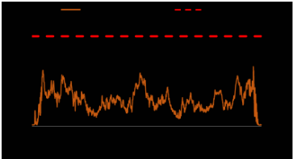
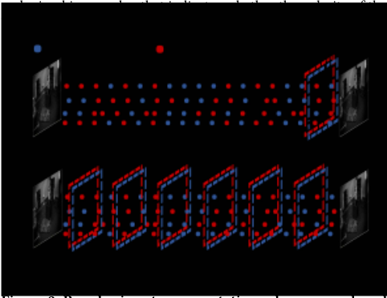
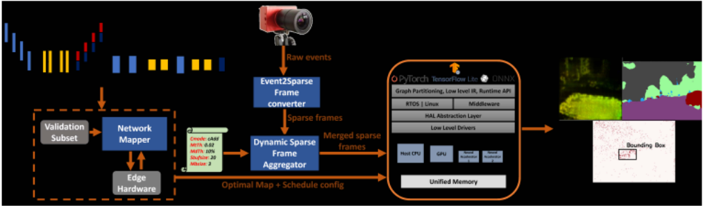
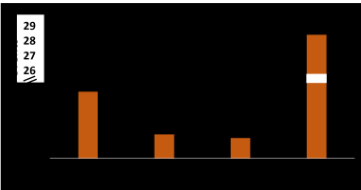
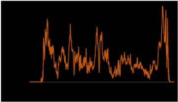
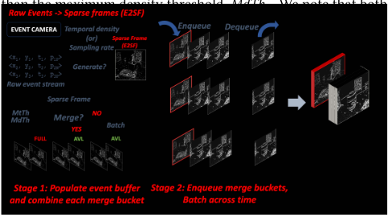
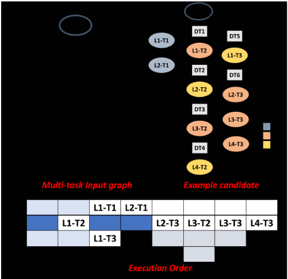
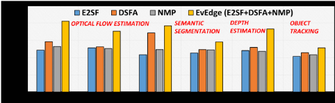
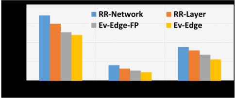
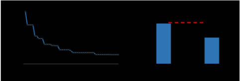

Ev-Edge：在通用边缘平台上高效执行事件驱动（event-based）视觉算法
论文针对事件相机（event camera/DVS）输出的异步稀疏事件流在 CPU/GPU/DLA 等异构边缘平台上利用率低、延迟高的问题，提出推理优化框架 Ev-Edge。方法包含三项优化：E2SF 将原始事件流按时间 bin 直接编码为 COO 风格稀疏帧以调用稀疏计算库；DSFA 在运行时依据事件时间密度与硬件处理能力动态合并稀疏帧，在时间粒度与算力利用之间权衡；NMP 将多任务网络表示为有向图，用进化搜索联合决策层到处理单元的映射与层精度，兼顾计算与通信开销。在 Jetson Xavier AGX 上，单任务场景相对 all-GPU 实现取得 1.28x-2.05x 延迟与 1.23x-2.15x 能效提升，多任务场景相对 round-robin 调度取得 1.43x-1.81x 延迟提升且精度损失可忽略。该工作属于边缘 AI 系统级软件优化，与团队内存/互连 IP 的架构、RTL 与验证职责无直接交集。
事件相机产生的高速异步稀疏事件流与 ANN/SNN/混合 SNN-ANN 视觉算法在通用异构边缘平台上严重失配：网络将事件流转成稠密 event frame 后执行固定尺寸矩阵运算，产生大量冗余计算（MVSEC 数据集上 event frame 中实际事件占比仅 0.15%-28.57%）；直接转稀疏张量又因编解码开销过高得不偿失；已有方法按固定事件数或固定采样率静态构帧，不考虑硬件处理速度，高活动期事件帧积压推高整体延迟；多任务并发执行时硬件资源共享低效。论文要解决如何在现成（commodity）边缘平台上高效执行事件驱动视觉算法。
提出 Ev-Edge 框架，含三项优化：(1) Event2Sparse Frame converter（E2SF）将 AER 格式原始事件流按事件 bin 直接累积正负极性并存储为类似 COO 的双通道稀疏帧，绕过中间稠密 event frame，使计算量与事件数成正比并可调用稀疏库；(2) Dynamic Sparse Frame Aggregator（DSFA）在运行时用带容量、最大延迟阈值 MtTh 与密度阈值 MdTh 约束的 merge bucket 贪心合并稀疏帧（支持 cAdd 相加与 cBatch 拼接两种模式），依据输入事件动态与硬件处理能力动态合批，提升硬件利用率；(3) Network Mapper（NMP）将多任务层依赖表示为有向图，以进化搜索（适应度评估、交叉、变异、适应度缓存）联合优化层到处理单元的映射与层精度，目标函数在精度退化阈值约束下最小化延迟，层执行时间与通信时间在目标硬件上预先实测，用执行队列与关键路径分析做快速延迟估计。
单任务场景：在 Jetson Xavier AGX 上相对 all-GPU 实现，延迟提升 1.28x-2.05x，能效提升 1.23x-2.15x
多任务场景：相对 RR-Network 粗粒度 round-robin 调度延迟提升 1.43x-1.81x，相对 RR-Layer 细粒度调度提升 1.24x-1.41x，精度损失可忽略
Ev-Edge-FP（仅映射到全精度核心以避免精度损失）比 Ev-Edge 慢 1.05x-1.22x，但仍显著快于两个 round-robin 基线
对混合 SNN-ANN 配置，NMP 进化搜索得到的配置比随机搜索快 1.42x
MVSEC 数据集上光流网络的 event frame 中实际事件占比仅 0.15%-28.57%，说明稠密帧存在大量冗余运算
与已有工作的区别：(1) 不依赖专用事件处理加速器，而是通过纯软件优化在现成异构边缘平台上提升事件视觉算法性能，与专用加速器工作正交；(2) E2SF 直接从原始事件流生成稀疏帧，避免稠密帧转稀疏张量时的高昂编解码开销；(3) DSFA 在构帧/合帧时同时考虑输入事件动态与硬件处理能力，而已有方法静态构帧导致事件帧积压；(4) NMP 在异构平台映射搜索中同时纳入层精度选择与计算/通信开销，而已有映射框架仅做映射搜索、未做精度联合搜索。
相关度级别：low
命中能力域：无明显对应
理由：论文核心是事件相机视觉工作负载在通用边缘平台上的软件级推理优化（稀疏编码、运行时动态合批、NN 层映射与混合精度选择），不涉及内存/互连 IP 的架构定义、RTL 实现与时序/物理实现，也不属于 UVM 验证、形式验证、仿真加速/Emulation/FPGA 原型或验证自动化中的任何一项，七个能力域均无实质命中。唯一弱关联点在于 NMP 的实测执行时间查表+关键路径延迟估计+进化搜索的 DSE 流程与 2.1 域 workload-driven 性能建模在方法论上有抽象类比，DSFA 按硬件吞吐动态合批的思想也可类比到回归任务调度，但对象是 NN 算子映射而非 IP 微架构，属间接启发，不足以支撑 medium。
建议动作：仅了解结论
Shrihari Sridharan，普渡大学电气与计算机工程学院（School of ECE），sridhar4@purdue.edu
事件相机凭借其高时间分辨率、高动态范围以及几乎可以忽略的运动模糊，已成为自主导航系统中一种颇具前景的传感模态。近期研究表明，为了利用此类传感器输出的异步时间事件流在一系列视觉任务上取得最佳性能，宜采用人工神经网络（Artificial Neural Networks, ANN）、脉冲神经网络（Spiking Neural Networks, SNN）以及混合 SNN-ANN 算法的组合。然而，我们观察到，这类工作负载在配备 CPU、GPU 和神经网络加速器等异构处理单元的通用边缘平台上利用率低下、性能不佳。其原因在于，事件流的不规则特性与算法的多样化特征，同底层硬件平台之间存在失配。我们提出 Ev-Edge，这是一个包含三项关键优化的框架，用于提升基于事件的视觉算法在边缘平台上的性能：(1) Event2Sparse Frame 转换器直接将原始事件流转换为稀疏帧，从而能够以极小的编码开销使用稀疏库；(2) Dynamic Sparse Frame Aggregator 在运行时合并稀疏帧，在事件的时间粒度与计算需求之间进行权衡，从而提高硬件利用率；(3) Network Mapper 将并发执行的任务映射到不同的处理单元，同时在综合考虑计算与通信开销的情况下选择层精度。在面向一系列自主导航任务的多个最先进网络上，针对单任务执行场景，Ev-Edge 在 NVIDIA Jetson Xavier AGX 平台上相比全 GPU 实现取得了 1.28 倍至 2.05 倍的延迟改进以及 1.23 倍至 2.15 倍的能耗改进。在多任务执行场景中，Ev-Edge 相比轮询调度方法也取得了 1.43 倍至 1.81 倍的延迟改进。
Shrihari Sridharan、Surya Selvam、Kaushik Roy 和 Anand Raghunathan。2024。Ev-Edge：基于事件的视觉算法在通用边缘平台上的高效执行。载于第61届 ACM/IEEE 设计自动化会议（DAC '24），2024年6月23日至27日，美国加利福尼亚州旧金山。ACM，美国纽约州纽约，共6页。https://doi.org/10.1145/3649329.3655966
在满足以下条件的前提下，允许免费制作本作品部分或全部内容的数字或纸质副本以供个人或课堂使用：副本的制作与分发不得以营利或获取商业利益为目的，且副本首页须带有本声明及完整的引用信息。本作品中第三方组件的版权必须予以尊重。如需用于其他用途，请联系所有者/作者。
Surya Selvam
普渡大学电子与计算机工程学院（School of ECE）
selvams@purdue.edu Kaushik Roy 普渡大学电子与计算机工程学院 kaushik@purdue.edu Anand Raghunathan 普渡大学电子与计算机工程学院 raghunathan@purdue.edu
事件相机（Event camera），也称为动态视觉传感器（Dynamic Vision Sensor, DVS）[15]，在自动驾驶汽车和无人机（Unmanned Aerial Vehicle, UAV）等自主系统中已展现出巨大潜力[10]。这类受生物启发的低延迟传感器产生逐像素的亮度变化异步流，称为事件（event），具有高时间分辨率（每秒数百万个事件）、高动态范围（约 140 dB）以及可忽略不计的运动模糊[10]。为了有效处理这些事件数据流，需要适用于这种传感模态的合适算法。近期的研究工作[8, 11, 13, 16]开发了人工神经网络（Artificial Neural Network, ANN）、脉冲神经网络（Spiking Neural Network, SNN）以及混合 SNN-ANN 算法，用于处理事件流以执行光流估计、语义分割和深度估计等视觉任务。
诸如 NVIDIA Jetson [20] 和 Google Coral [12] 等通用边缘平台，配备了 CPU、GPU

以及专用神经网络加速器（DLA/TPU/NPU）等异构处理单元，在高效运行机器学习工作负载方面日益受到重视。然而，我们观察到，在这些异构边缘平台上部署基于事件的视觉系统会导致性能欠佳。这是由于一方面传感模态与网络的处理需求，和另一方面底层硬件平台之间存在根本差异。例如，这些网络通常将原始事件流转换为类图像的事件帧。随后，无论实际生成的事件数量多少，这些事件帧都以固定尺寸的矩阵乘法运算进行处理，导致大量冗余且浪费的运算，如图 1 所示。尽管可以对事件帧应用稀疏例程，但编码和解码的开销超过了潜在收益。另一个关键因素是硬件平台无法匹配视觉传感器发出事件数据的速率。现有方法[7, 8]要么通过静态计数事件来构建事件帧，要么以固定速率对事件进行采样，而未考虑硬件的处理能力。最后，在许多应用中，需要以高效共享硬件平台资源的方式并发执行多个网络。
我们的工作 Ev-Edge 应对了这些挑战，通过引入三项关键优化，提升了基于事件的算法在异构边缘平台上的性能。首先，我们提出事件到稀疏帧转换器（Event2Sparse Frame converter, E2SF），将原始事件流直接转换为稀疏帧表示，从而无需中间事件帧。该优化使得稀疏库得以使用，并确保计算开销与生成的事件数量成正比。其次，我们提出动态稀疏帧聚合器（Dynamic Sparse Frame Aggregator, DSFA），该优化根据输入动态特性和硬件处理能力动态合并稀疏帧，从而提高硬件利用率。最后，我们提出网络映射器（Network Mapper, NMP），将并发执行的任务分配到不同的处理单元，同时优化各层精度。
在多种最先进的人工神经网络（ANN）、脉冲神经网络（SNN）以及混合 SNN-ANN 上，对于单任务场景，Ev-Edge 相比 NVIDIA Jetson AGX Xavier 上的全 GPU 实现取得了 1.28 倍至 2.05 倍的延迟改进和 1.23 倍至 2.15 倍的能耗改进。此外，在多任务执行场景中，Ev-Edge 相比轮询调度方法还取得了 1.43 倍至 1.81 倍的延迟改进，且精度损失可忽略不计。
事件相机与输入表示。事件相机（event camera）是一类神经形态传感器，其以高时间分辨率运行，通过异步方式捕捉场景中每个像素的亮度（对数强度）变化。当某一特定像素处的对数强度（𝐼）大于阈值（𝜃）时（即 | | 𝑙𝑜𝑔 ( 𝐼 ( 𝑡 + 1 ))- 𝑙𝑜𝑔 ( 𝐼 ( 𝑡 ))|| > = 𝜃 ），相机便生成一个事件。事件数据以地址事件表示（AER）格式 {x,y,t,p} 输出，其中 x 和 y 对应像素位置，t 表示时间戳

以及网络兼容性，如图 2 所示，异步事件会在一段时间内被累积以构建事件帧。一些工作 [4] 在两帧连续图像之间完整累积事件，并对事件总数以及像素中最近一次强度变化的时间戳进行编码。另一些工作 [7, 11] 则将两帧连续图像之间的事件离散化为均匀间隔的同步事件帧。在推理过程中，这些事件帧要么作为具有 B 个通道的单一输入呈现给网络，要么在 B/k 个时间步上按顺序呈现，其中 k 表示一个时间步中拼接的事件帧数量。我们注意到，Ev-Edge 支持上述所有输入表示。
在本节中，我们回顾以往的相关研究工作，并将 EvEdge 置于其背景之中。
算法技术。为了利用事件的时空稀疏性，[9] 和 [14] 提出了用于计算基于事件的卷积的新方法。我们的工作与这些技术形成互补，从而带来额外的性能提升。
硬件加速器。诸如 [2, 3] 之类的专用加速器可加速处理异步事件数据的关键计算。这些工作与我们的工作正交，因为我们提出的是软件优化，旨在提升基于事件的网络在现成硬件平台上的性能。尽管如此，我们的部分优化同样适用于专用加速器。映射框架。若干工作 [17-19] 将多个人工神经网络（ANN）向异构平台的映射形式化为一个优化问题。它们在搜索过程中考虑计算与通信的开销，以确定最终的映射配置。Ev-Edge 的 Event2Sparse Frame 转换器与 Dynamic Sparse Frame Aggregator 组件与这些框架互补，并专门针对处理时序事件流所面临的独特挑战。EvEdge 中的 Network Mapper 虽然在目标上与这些映射框架相似，但还在映射过程中包含了对层精度的搜索。
Ev-Edge 是一个优化框架，旨在异构边缘平台上高效执行基于事件的视觉算法。图 3 展示了 Ev-Edge 框架的概览。作为离线步骤，预训练网络被输入到 Network Mapper（NMP）中，由其确定每一层在哪个处理单元上执行以及执行顺序。在推理过程中，事件相机产生原始事件流，这些事件流由 Event2Sparse Frame 转换器（E2SF）直接转换为稀疏帧。随后，Dynamic Sparse Frame Aggregator（DSFA）在合并这些稀疏帧的同时，兼顾输入动态特性与硬件处理能力，从而生成合并后的稀疏帧。需要注意的是，NMP 是一个仅执行一次的离线过程，而 E2SF 和 DEFA 优化则在推理过程中于运行时应用。以下小节将对各个组件进行全面而深入的描述。
Several state-of-the-art event-based networks convert asynchronous raw event streams to a synchronous dense event frame representation of the data. As shown in Figure 4, the average number of actual events per event frame can vary widely (0.15%-28.57%) across different networks that estimate optical flow [1, 7, 8] on the MVSEC [5] dataset, indicating that most event frames are extremely sparse. This results in a high number of wasteful computations as well as increased memory requirements. While the dense event frames can be converted to sparse tensors and processed with sparse linear algebra libraries, the associated encoding and decoding overheads are prohibitive. Instead, we propose an Event2Sparse Frame converter (E2SF) that converts the raw event stream from the camera directly to a sparse frame representation, enabling faster processing of the generated events on commodity edge platforms.

Event cameras such as the Dynamic and Active Vision Sensor (DAVIS) [15] output synchronized grayscale frames along

with the asynchronous event data. We refer to the timestamps of a pair of consecutive grayscale frames as Tstart and Tend . First, E2SF maps the event timestamps to discretized event bins based on Equation 1. The number of event bins ( nB ) determines the temporal resolution of the data, which relates to how precisely motion is captured in a scene.
The duration of time interval assigned to each event bin, biS is determined and used to scale each timestamp to its respective event bin index 𝐸𝐵 𝑘 . Once the events are assigned to their respective event bins, we accumulate the positive and negative polarities separately for the same pixel locations within each event bin. Finally, we iterate over the pixels in each accumulated event bin and store the row indices, column indices and their corresponding polarities as separate channels, similar to the sparse Coordinate (COO) format. Therefore, each event bin is converted to a two-channel sparse frame (positive and negative polarity), like [7]. Converting the event data to sparse frame representations enables the use of sparse libraries [6] for improved performance during inference.
在 E2SF 将来自相机的原始事件转换为同步稀疏帧之后，网络会在硬件平台上处理这些帧以生成任务预测。然而，我们得到一个关键观察：视觉传感器所生成的事件数量随时间变化仍然存在很大差异（时间事件密度）（图 5）。先前的工作 [7, 8] 以静态方式构建事件帧，或者通过统计已发生事件的数量，或者按照固定的时间间隔。然而，它们在生成事件帧时并未考虑硬件处理时间，导致在高活动时段出现事件帧积压，从而显著增加整体延迟。为应对这一挑战，DSFA 在运行时通过同时适应不断变化的时间事件密度和硬件处理能力来合并稀疏帧，从而以最小的精度损失改善延迟。
图 6 详细描述了 DSFA 的流程。DSFA 由两个阶段组成，

以便生成合并后的稀疏帧。我们首先
用稀疏帧填充事件缓冲区，并利用一种聚合方法将它们合并。随后，我们将合并后的稀疏帧派发到推理队列，之后再将其组合以形成批处理输入表示。
首先，我们分配一个大小为 EBufsize 的事件缓冲区来存储生成的稀疏帧（Evf_k）。随后，该事件缓冲区被划分为容量为 MBsize 的合并桶（merge bucket），每个合并桶被指定用于容纳稀疏帧的一个特定子集。这些稀疏帧根据 CMode 参数进行合并。根据任务的不同，DSFA 支持多种合并模式（cMode）：cAdd 对各帧之间的像素进行相加，而 cBatch 则将稀疏帧拼接在一起。每个合并桶（MB）都会跟踪当前容量、最早脉冲帧的时间（Time(Evf_1)）以及合并后的桶密度（MBmerged）。此外，每个合并桶都有一个状态标志，用于指示其是可以接受新的事件帧（AVL）还是已达到最大占用（FULL）。当生成稀疏帧 Evf_k 时，我们采用贪心方法将其放置到最早的可用桶中，但需满足两个条件：(i) 当前 Evf_k 与合并桶中最早条目之间的时间延迟在最大延迟阈值 MtTh 之内；(ii) 当前事件帧与 MBmerged 之间的空间密度百分比变化小于 MdTh。MtTh 和 MdTh 需要针对每个任务单独进行调优。如果 Evf_k 不满足其中任一条件，则当前桶的状态被更改为 FULL，并将该稀疏帧放置到下一个合并桶中。然而，当 cMode 设置为 cBatch 时，每个生成的 Evf_k 都会被放置到一个新的合并桶中。如果事件缓冲区的占用超过 EBufsize，我们按照指定的 cMode 对每个合并桶进行合并。得到的合并桶作为最新的稀疏帧被转发到各自的推理队列，同时每个队列中最早的稀疏帧被丢弃。这些合并桶被拼接起来，形成一个合并后的稀疏帧表示。由于稀疏帧的批处理，这有助于提高硬件利用率以及推理执行的效率。如果硬件平台在事件缓冲区达到满容量之前变为可用，我们会调度可用的合并桶以最大化硬件利用率。选择最优的 MBsize 以在精度和性能之间实现最佳权衡同样十分重要。例如，较小的 MBsize 能更好地捕获时间信息，从而更准确地表示场景；而较大的 MBsize 则将事件整合到更少的稀疏帧中，从而带来性能的提升。

网络映射器（NMP）在并发执行过程中将多个网络的各层高效地映射到异构边缘平台上的不同处理单元，同时选择最优的层精度。优化过程会考虑计算与通信开销，以及混合精度所带来的精度下降。我们将多任务网络依赖关系表示为有向图，如图 7(a) 所示。多任务图中的每个节点对应网络的一个特定层，而每条边表示相应层之间的数据依赖关系。在多任务输入图中，每个节点可以映射到异构平台的多种处理单元 { 𝐷 1, 𝐷 2, ..., 𝐷 𝑘 }。此外，每种处理单元都提供一系列精度选项。涵盖所有可行映射方案与精度选择的可能配置数量随层数呈指数级增长，即 ( # 𝑃𝑟𝑒𝑐𝑖𝑠𝑖𝑜𝑛𝐶ℎ𝑜𝑖𝑐𝑒𝑠 ∗ # 𝑃𝑟𝑜𝑐𝑒𝑠𝑠𝑖𝑛𝑔𝐸𝑙𝑒𝑚𝑒𝑛𝑡𝑠 ) # 𝐿𝑎𝑦𝑒𝑟𝑠 。因此，依赖朴素的临时性方法是不切实际的。相反，我们将设计空间探索表述为一个进化搜索问题，以确定最佳的映射与层精度。我们在公式 2 中定义目标函数，以最小化任务 { 𝑇 1, 𝑇 2, ..., 𝑇 𝑛 } 的延迟，并使每个任务因混合精度而产生的精度下降 { Δ 𝐴 1, Δ 𝐴 2, ..., Δ 𝐴 𝑛 } 保持在所定义的阈值 Δ A 之内。类似地，这一过程也可以重复进行，以优化诸如能耗之类的其他目标。接下来，我们将在 4.3.1 节和 4.3.2 节中更详细地描述我们的映射方法与延迟估计。

4.3.1 映射方法。如图 7(a) 所示，我们通过将任务的每一层分配给某个处理单元以及该处理单元所支持的一种精度选择，将多任务输入图转换为一个潜在候选解（映射配置）。例如，候选解中的一个示例基因 “8dlaL1T1” 表示将任务 1 的第 1 层以 8 位精度映射到深度学习加速器（DLA）上。此外，当一个任务的生产者-消费者层被分配到不同的处理单元时，我们还会在这些层之间插入数据传输节点，以计入通信开销。我们首先随机选择一个由潜在解组成的初始候选集。在选定初始种群后，基于适应度分数对每个候选解进行评估。随后，通过交叉和变异生成适应度更高的父代。该过程重复迭代多次，以为网络选出最佳的映射与精度。以下是我们进化搜索算法的关键步骤。
候选方案评估。每个候选方案的适应度使用公式2中给出的目标函数进行评估。为了计算每个任务的精度，预训练网络会根据候选集中指定的各层位宽进行线性量化，并在验证数据集上进行评估。需要注意的是，精度是针对每个任务单独确定的。延迟则基于各层在硬件平台上的执行顺序进行估计，该执行顺序由4.3.2节中描述的一种高效调度算法确定。这一过程会对所有候选方案重复执行，并存储它们各自的适应度分数。由于搜索跨越多次迭代，我们采用了一些优化技术来降低其复杂度。首先，我们仅在验证集的随机采样子集上执行推理。其次，每个新候选方案的适应度分数都会被缓存，当相同的候选方案从不同父代中产生时可直接复用。
交叉。在选定父代之后，由当前代中适应度最高的候选方案产生新的子代。对于每一对相邻的父代，以均等概率随机选择其中一个作为下一代的子代。
变异。每个任务中指定数量的层会被替换为随机的映射资源和精度选择。
4.3.2 调度方法与延迟估计。计算每个候选方案的适应度分数需要确定各层的执行顺序并估计延迟。由于该过程需要在多代中针对大量候选方案反复执行，因此必须足够快速。为此，如图7(b)所示，我们在异构平台中为包括统一内存在内的每个设备建立执行队列，以便于某些层的并行执行。基于多任务输入图中的数据依赖关系，我们得到各层的一个偏序。随后，利用该偏序，我们在各自（从映射器获得的）执行队列内，对尚未被数据依赖关系串行化的节点进行串行化。如公式3所示，每个节点的结束时间 End_T(node) 由三个因素决定，即：其所有父节点的完成时间（End_T(ParentN)）、该节点的实际执行时间（Exec_T(Node)）以及执行队列中位于其之前的所有节点的完成时间（CurDeviceQ_T）。一旦图中所有节点的结束时间均已确定，便通过分析图的关键路径来计算候选方案的延迟。每一层的单独执行时间以及层间的通信时间在搜索过程开始前于硬件平台上测量并记录。
𝐸𝑛𝑑 _ 𝑇 ( 𝑁𝑜𝑑𝑒 ) = 𝑚𝑎𝑥 ( 𝐸𝑛𝑑 _ 𝑇 ( 𝑃𝑎𝑟𝑒𝑛𝑡 1 ) ...𝐸𝑛𝑑 _ 𝑇 ( 𝑃𝑎𝑟𝑒𝑛𝑡𝑁 ) , 𝐶𝑢𝑟𝐷𝑒𝑣𝑖𝑐𝑒𝑄 _ 𝑇 ) + 𝐸𝑥𝑒𝑐 _ 𝑇 ( 𝑁𝑜𝑑𝑒 ) 𝐶𝑟𝑖𝑡𝑖𝑐𝑎𝑙𝑃𝑎𝑡ℎ𝐿𝑎𝑡𝑒𝑛𝑐𝑦 = 𝑚𝑎𝑥 ( 𝐸𝑛𝑑 _ 𝑇 ( 𝑁𝑜𝑑𝑒 1 ) ...𝐸𝑛𝑑 _ 𝑇 ( 𝑁𝑜𝑑𝑒𝑁 ) ) (3)
在本节中，我们讨论用于评估 Ev-Edge 的实验设置和基准测试。
应用与数据集。我们在表 1 所总结的不同任务和网络上对 Ev-Edge 进行评估。需要注意的是，光流、语义分割和目标跟踪任务在多车辆立体事件相机（Multi Vehicle Stereo Event Camera，MVSEC）数据集 [5] 的不同序列上进行验证，而深度估计任务则在合成事件深度估计（Depth Estimation oN Synthetic Events，DENSE）数据集 [11] 的 Town 10 序列上进行验证。在多任务执行过程中，我们在全人工神经网络（all-ANN，[4]、[11]）、全脉冲神经网络（all-SNN，[13]、[1]）以及 SNN-ANN 混合配置（[8]、[16]、[13]、[11]）上评估了我们的映射方法。需要注意的是，每种配置中的网络仅用于演示 NMP 的功能。根据应用的不同，某些任务可能需要顺序处理，这可以纳入多任务输入图中。
| Network | Task | Type | # Layers |
|---|---|---|---|
| SpikeFlowNet [7] | Optical Flow | SNN-ANN | 12 (4 SNN, 8 ANN) |
| Fusion- FlowNet [8] | Optical Flow | SNN-ANN | 29 (10 SNN, 19 ANN) |
| Adaptive- SpikeNet [1] | Optical Flow | SNN | 8 |
| HALSIE [16] | Semantic Segmentation | SNN-ANN | 16 (3 SNN, 13 ANN) |
| J. Hidalgo-Carrio et. al [11] | Depth Estimation | ANN | 15 |
| DOTIE [13] | Object Tracking | SNN | 1 |
| Network | Task | Type | # Layers |
仿真设置。Ev-Edge 使用 PyTorch 开发，并在 Jetson Xavier AGX 开发板上进行评估，该开发板是一种配备 CPU、GPU 和深度学习加速器（DLA）的异构边缘平台，用于加速深度学习工作负载。为了分析各层在不同精度级别下的执行时间，我们在 GPU 和 DLA 上均使用 TensorRT [21]。由于没有明确的方法来测量层间通信时间，我们基于带宽量和数据量来近似估算这些开销。
This section illustrates the performance improvements obtained by Ev-Edge on state-of-the-art event-based networks.
Single-task execution performance. Figure 8 shows the speedup results of Ev-Edge compared to an all-GPU implementation on the Jetson Xavier AGX hardware platform. We present the improvements achieved by Ev-Edge after each optimization is applied individually as well as the combined improvements. We observe that Ev-Edge consistently outperforms the GPU implementation by 1.23x-2.05x across different levels of optimization. Notably, SNNs (depending on the number of layers) achieve the highest performance improvements, as they have the longest execution times on these platforms as well as high activation sparsity. Also, DSFA does not produce significant benefits in semantic segmentation networks due to the pixel-wise accuracy requirements, limiting the aggressiveness of merging frames. We also report the minimal accuracy degradation due to Ev-Edge in Table 2. In addition to speedup improvements, Ev-Edge also achieves 1.23x-2.15x energy efficiency improvements over an all-GPU implementation.
Multi-task execution performance. Figure 9 shows the latency improvements of Ev-Edge per frame for different multi-task network configurations. We compare Ev-Edge to two variations of round-robin scheduling methods. RR-Network is a coarse-grained round-robin allocation policy where each network is assigned to a processing element and the rest of the networks are distributed in a cyclic manner. RR-Layer is a fine-grained round-robin allocation policy where each layer is assigned to a processing element. We notice that Ev-Edge provides 1.24x-1.41x improvements over RR-Layer and 1.43x-1.81x over RR-Network. This is because NMP searches from a much larger design space to optimize for both computation and communication overheads. We also consider another variation of Ev-Edge, Ev-Edge-FP which exclusively maps to full precision cores to prevent any accuracy degradation. Ev-Edge-FP is 1.05x-1.22x slower than Ev-Edge but still significantly faster than the RR-Network and RR-Layer baselines. Ev-Edge-FP can be useful for accuracy sensitive applications. Next we show the fitness score convergence over several generations of evolutionary search in Figure 10(a), indicating that latency and accuracy degradation are minimized simultaneously. We also compare NMP's evolutionary search technique in Figure 10(b) to random search where the candidates are randomly sampled every generation, for a mixed SNN-ANN network. We observe that Ev-Edge-NMP is 1.42x faster compared to the results of random search.



在本工作中，我们提出了 Ev-Edge，一个用于提升基于事件的算法在异构边缘平台上执行性能的框架。Ev-Edge 由三项集成到推理流水线中的优化组成。首先，E2SF 直接将原始事件流转换为稀疏帧，而无需转换为中间事件帧。其次，DSFA 在运行时综合考虑事件流的特性以及硬件效率来合并稀疏帧。最后，NMP 为并发执行的任务确定最佳的映射配置和层精度。我们在多种最先进的脉冲神经网络（SNN）、人工神经网络（ANN）以及混合 SNN-ANN 网络上，针对单任务和多任务两种场景，验证了 Ev-Edge 的有效性。
| Network-Metric | Baseline | Ev-Edge |
|---|---|---|
| SpikeFlowNet [7] (AEE- ↓ ) | 0.93 | 0.96 |
| Fusion-FlowNet [8] (AEE- ↓ ) | 0.72 | 0.79 |
| Adaptive-SpikeNet [1] (AEE- ↓ ) | 1.27 | 1.36 |
| HALSIE [16] (mIOU- ↑ ) | 66.31 | 64.18 |
| J. Hidalgo-Carrio et al. [11] (Avg Error- ↓ ) | 0.61 | 0.63 |
| DOTIE [11] (mIOU- ↑ ) | 0.86 | 0.82 |
| Network-Metric | Baseline | Ev-Edge |
致谢。本工作部分受到 IARPA 的 Micro4AI 项目以及认知系统协同设计中心（COCOSYS）的资助，COCOSYS 是由 DARPA 资助的 SRC 项目 JUMP 2.0 旗下的七个中心之一。